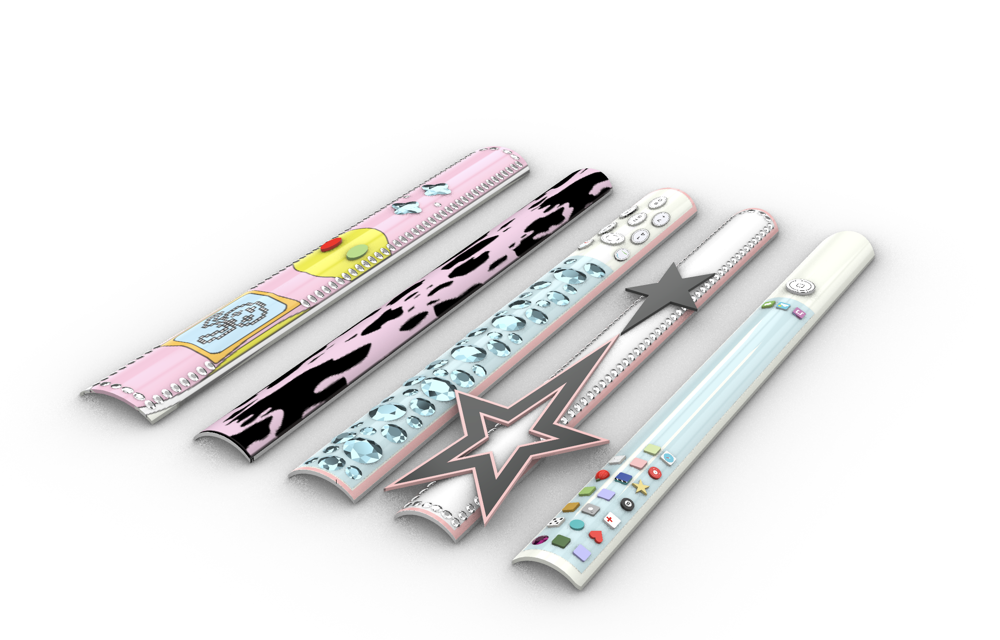
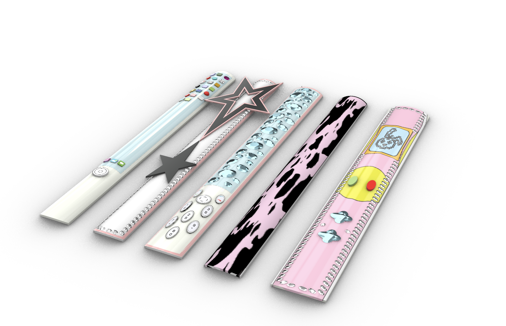

Rhino Model / 3D Object
Formal model of the final nail set.
These renders translate the hand-scale nail set into a formal product-design object, showing structure, proportion, surface, and material decisions from multiple angles.

